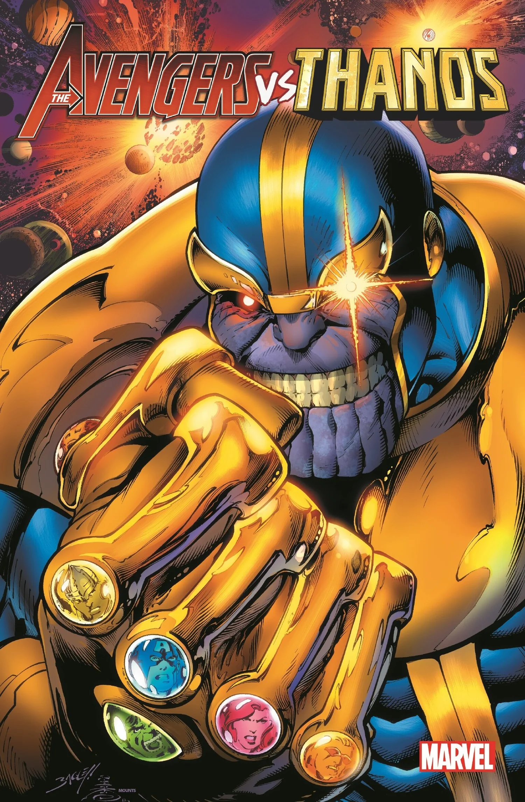

Thanos
Stephen Strange
O Homem-Aranha é um dos heróis mais icônicos da Marvel Comics. Criado por Stan Lee e Steve Ditko, ele apareceu pela primeira vez em Amazing Fantasy #15 (1962).
- Nome real: Peter Parker
- Universo: Terra-616
- Ocupação: Estudante / Fotógrafo
- Base: Nova York
Poderes e Habilidades
Após ser picado por uma aranha radioativa, Peter Parker adquiriu habilidades sobre-humanas.
- Força e agilidade sobre-humanas
- Sentido Aranha
- Capacidade de escalar paredes
- Intelecto genial
História
Após a morte de seu tio Ben, causada indiretamente por sua omissão, Peter aprende que "Com grandes poderes vêm grandes responsabilidades". Desde então, dedica sua vida a proteger os inocentes como o Homem-Aranha.